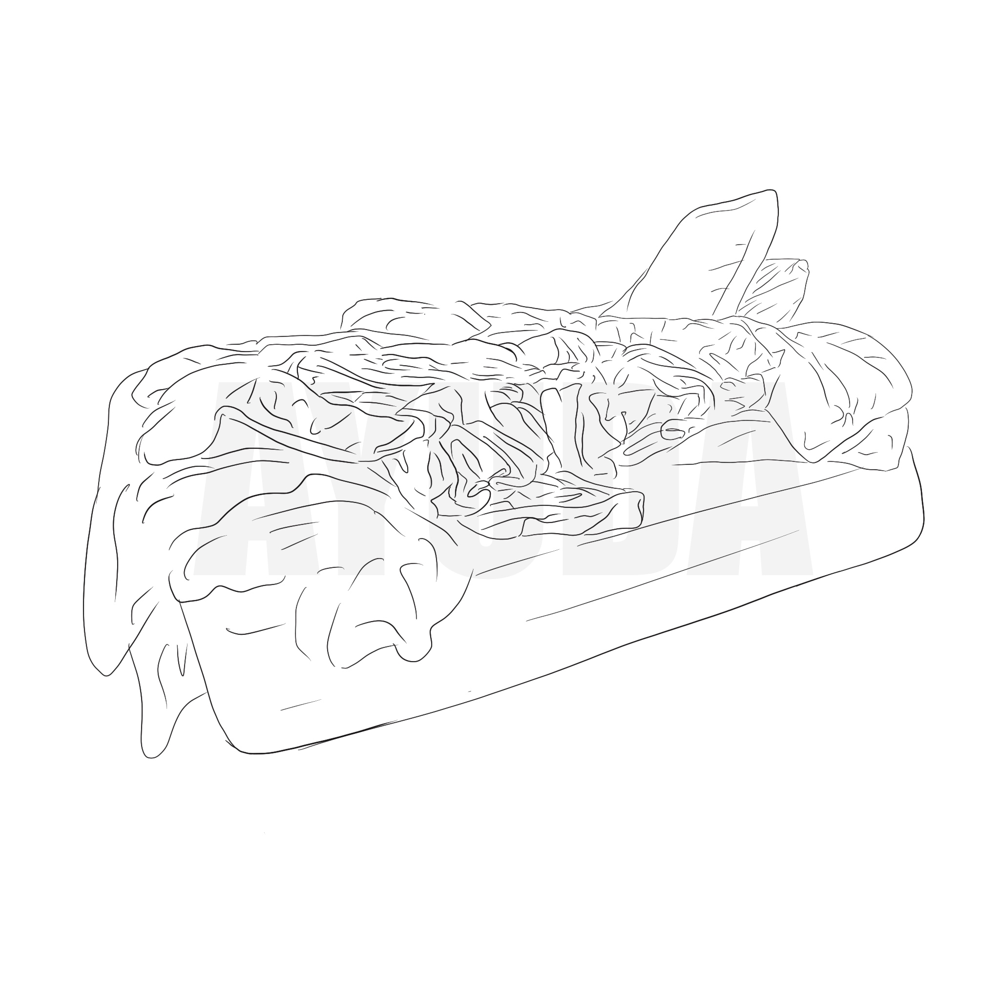
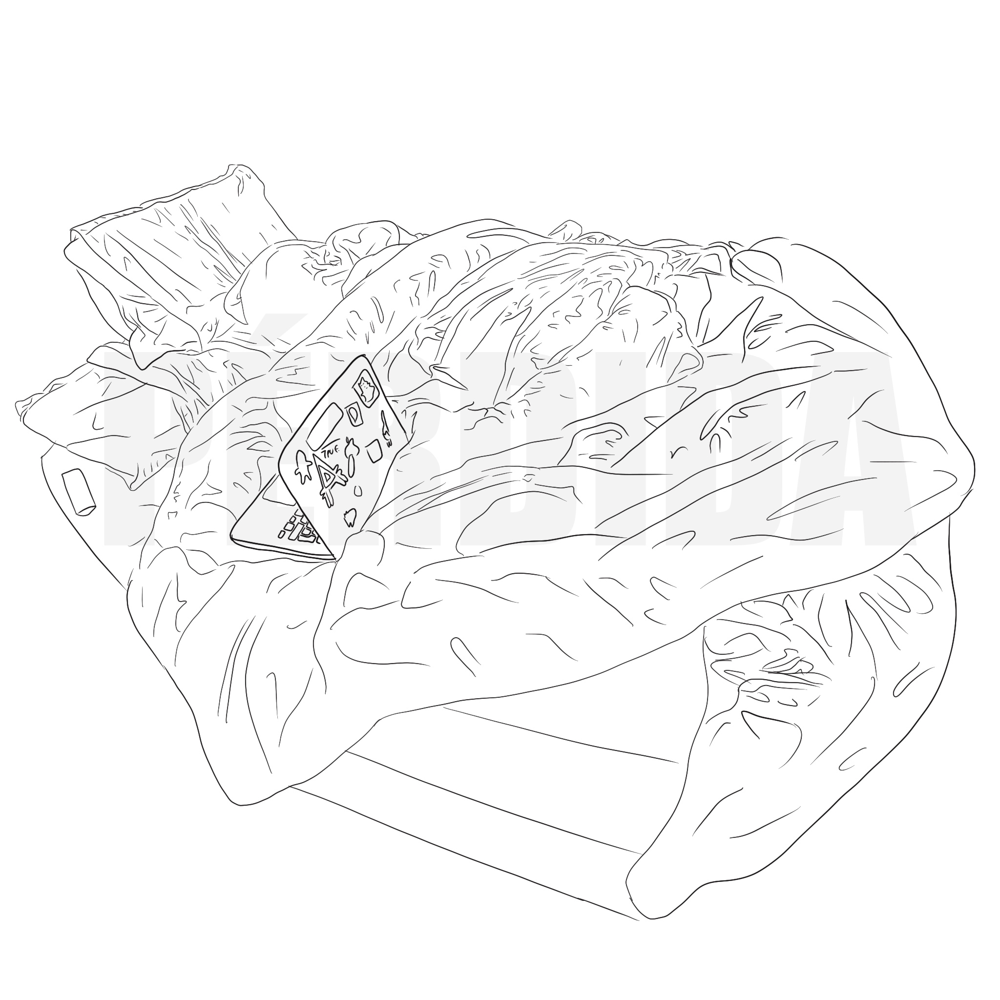
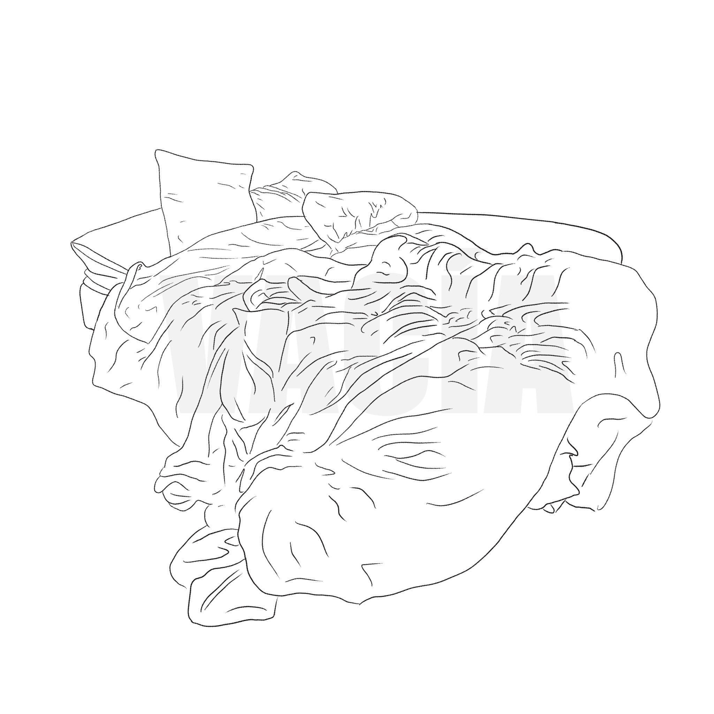
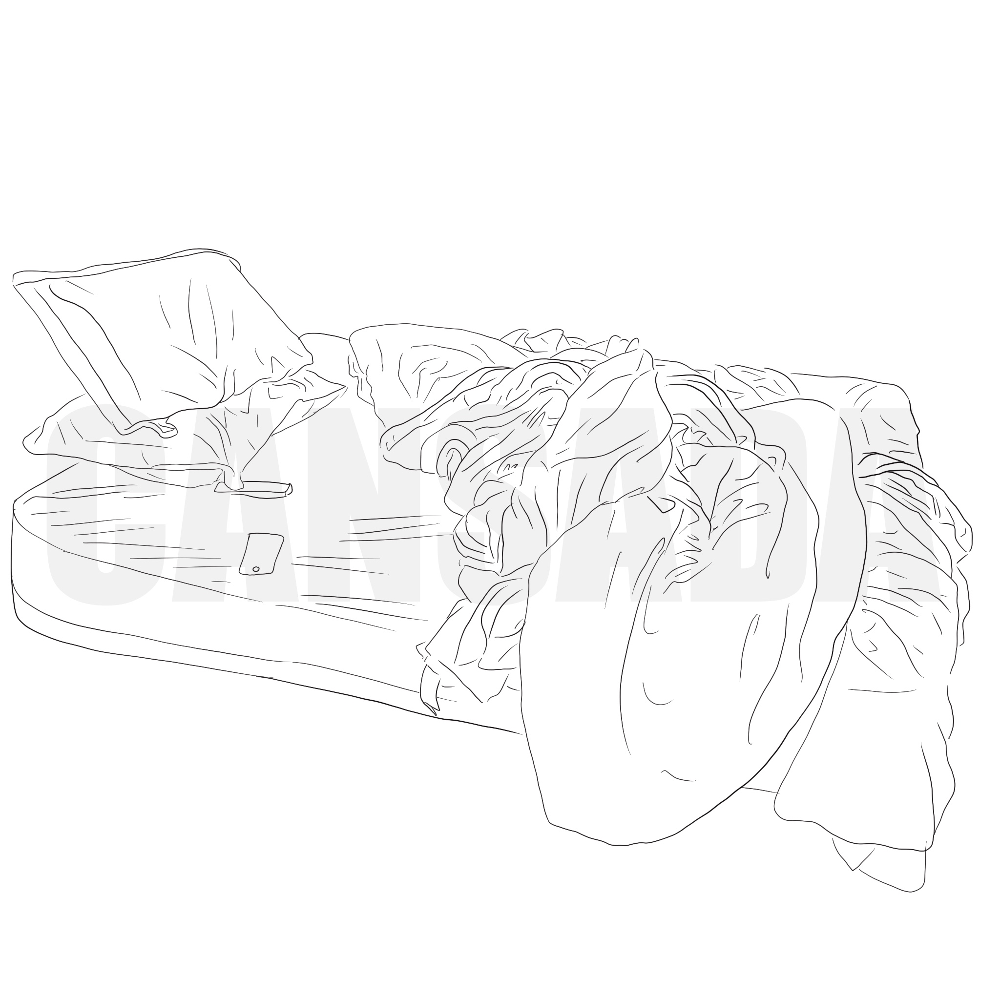
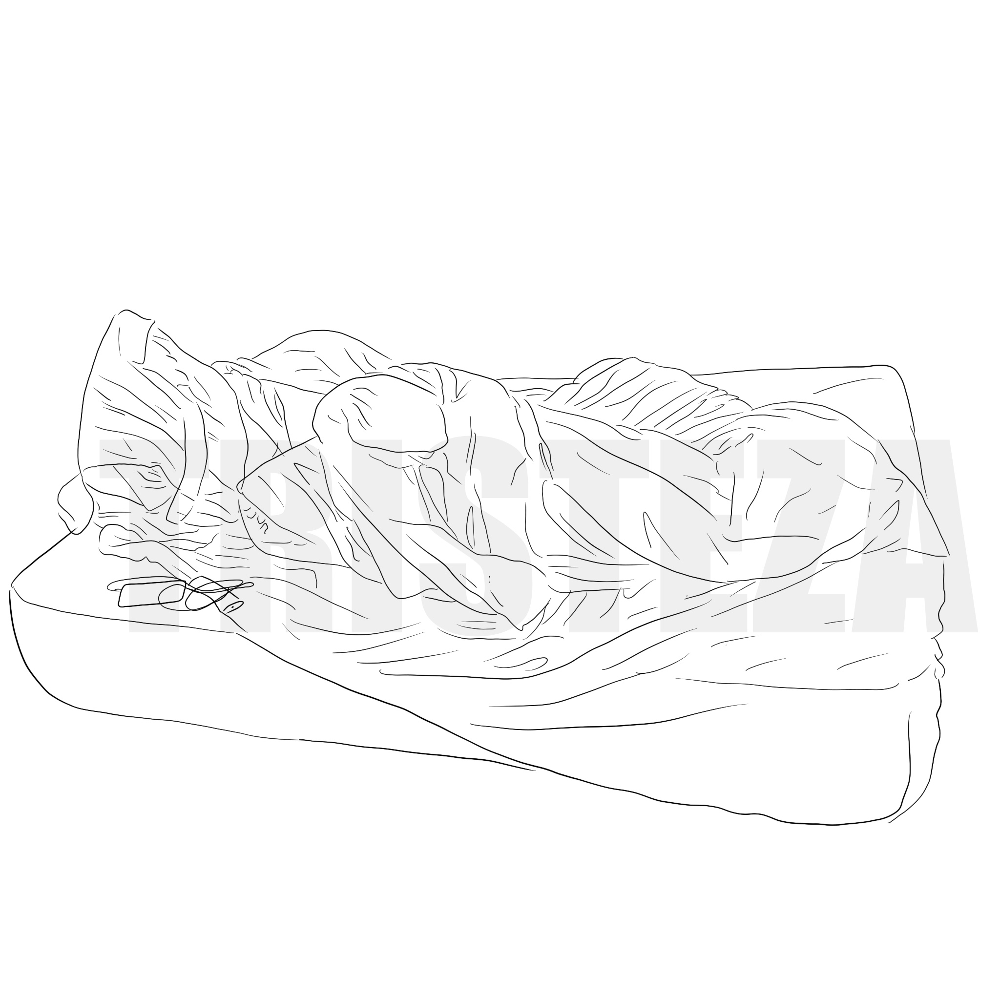
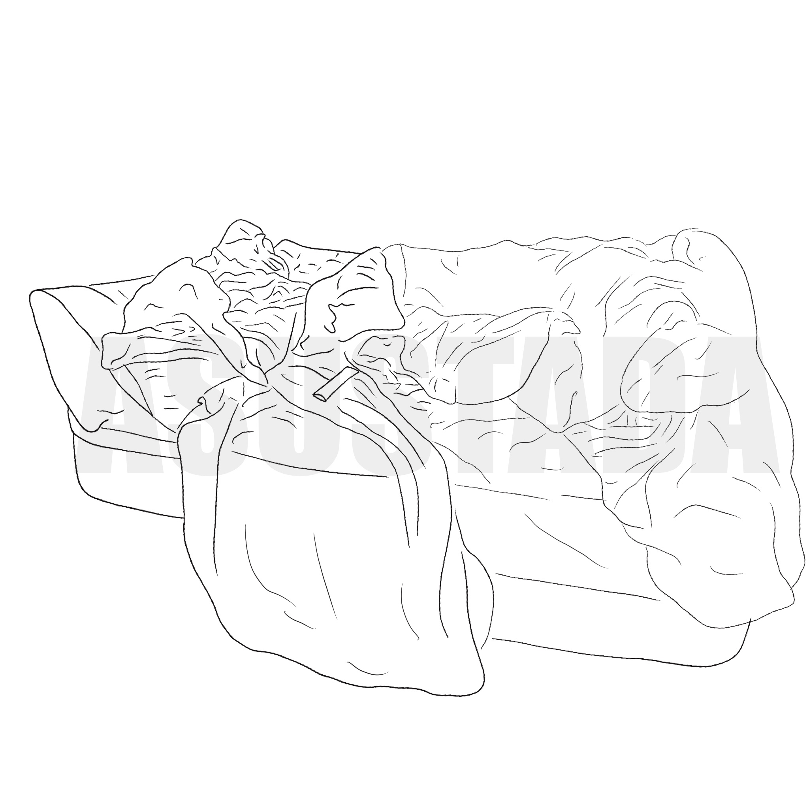

Dibujos
Mi cama se ha convertido en una extensión de mi cuerpo y sus arrugas en la textura que definen el sentimiento de desesperación, rabia, y desesperanza de mis peores días.








Mi cama se ha convertido en una extensión de mi cuerpo y sus arrugas en la textura que definen el sentimiento de desesperación, rabia, y desesperanza de mis peores días.